Determination of crystal structure of a powder sample by X-Ray Diffractometer
Objective
To identify the unknown powder sample by indexing of peaks with the help of obtained XRD pattern.
Apparatus used:
X-Ray Diffractometer, Sample and Sample holder.
Description Diffractometer: A diffractometer is a measuring instrument for analyzing the structure of a material from the scattering pattern produced when a beam of radiation or particles (such as X-rays or neutrons) interacts with it.
X-Rays : An X-ray, or X-radiation, is a penetrating form of high-energy electromagnetic radiation. Most X-rays have a wavelength ranging from 10 picometers to 10 nanometers, corresponding to frequencies in the range 30 petahertz to 30 exahertz and energies in the range 124 eV to 124 keV.
Monochromatic radiation: Monochromatic light is light (optical radiation) where the optical spectrum contains only a single optical frequency.
D-spacing: The d-spacing can be described as the distance between planes of atoms that give rise to diffraction peaks. Each peak in a diffractogram results from a corresponding d-spacing.
 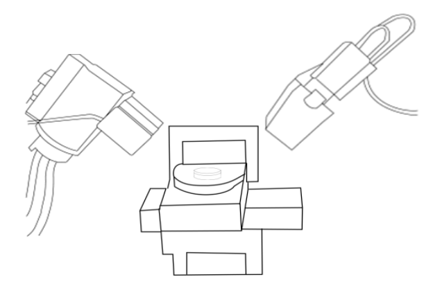
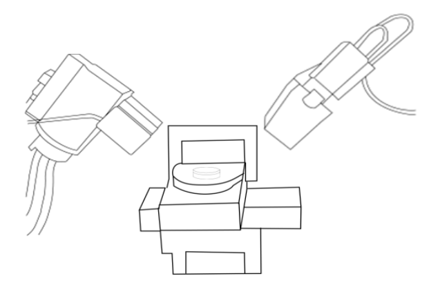
Place the sample.
Give me something to add here.
Obtain a flat surface on the specimen by belt grinding.


Support a polish paper of 1/0 fineness on a flat glass plate. Polish the specimens rubbing in forward direction only.


Prepare absolute scan
Configuration
Programmable XY with manual2
Scan axis
Gonio
Start angle
19.9946
End angle
80.0000
Step size
0.0262606
Time per step
10.200
Next time per step
7.140
Scan speed
0.656514
Pre-set counts
10000
Number of steps
2285
Estimated time
00:01:39
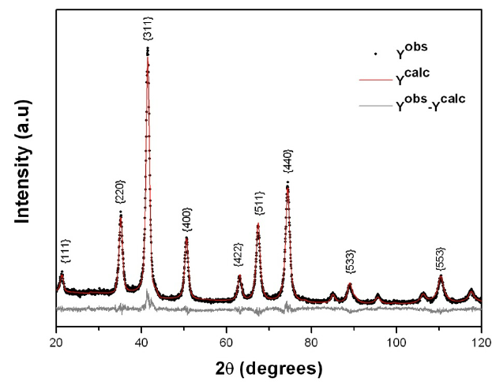
Finish polishing the specimens on 4/0 abrasive paper, wash hands and specimens.
Do the fine polishing on the disc polishing unit.
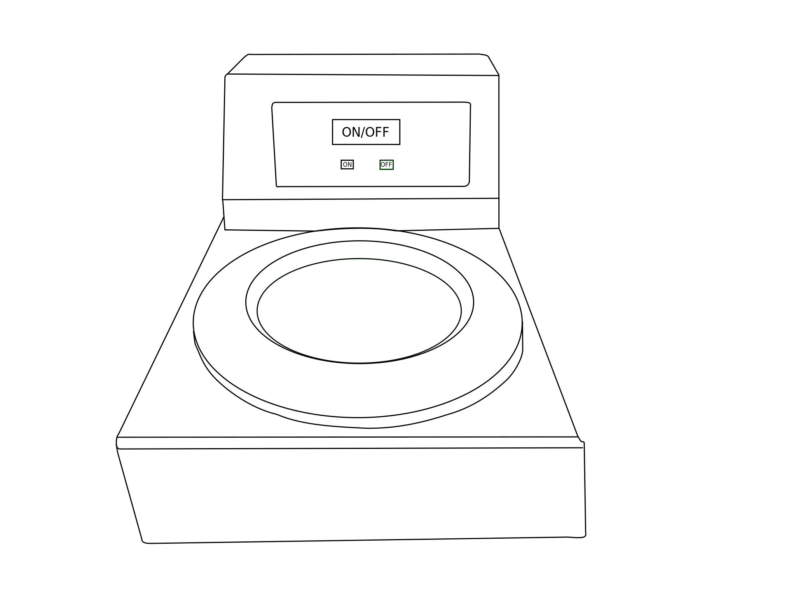 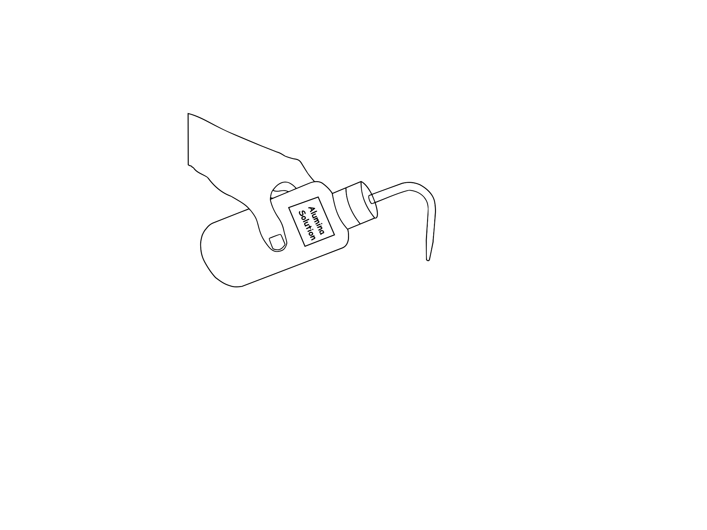 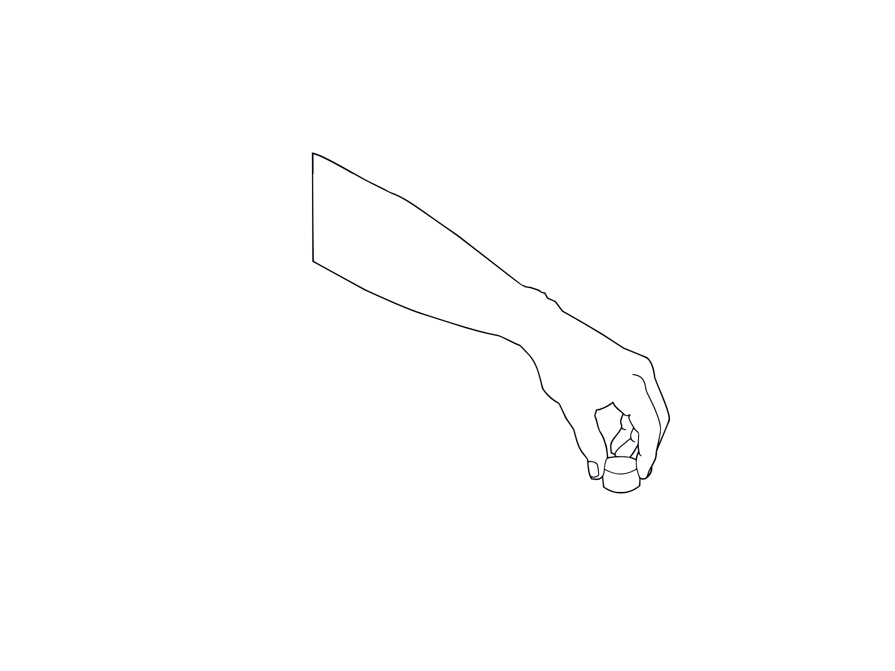 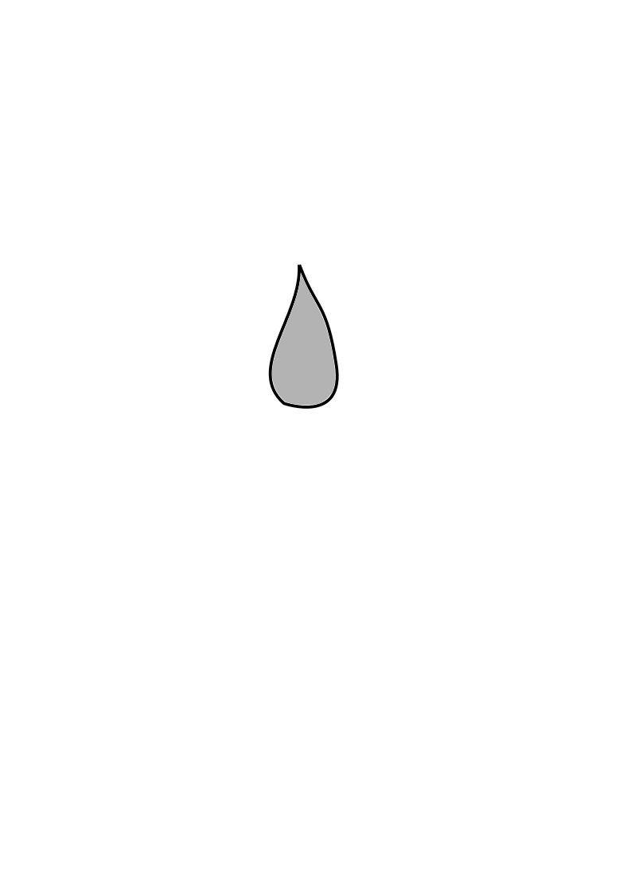
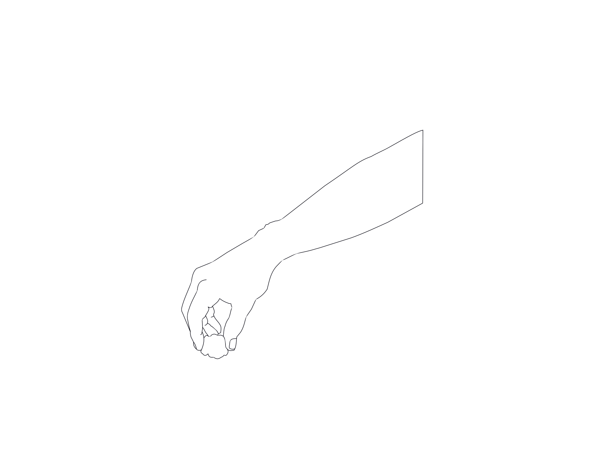 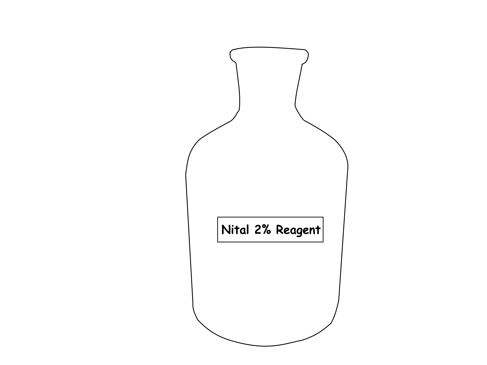 Note:
Examine both specimens under the microscope and compare the structural features.
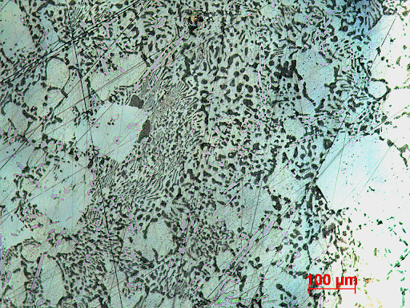 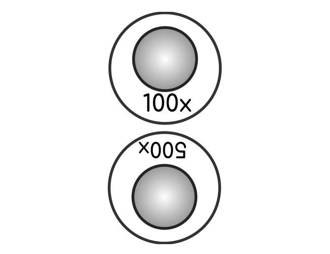
View the microstructures at different magnification levels and compare the microstructural features.
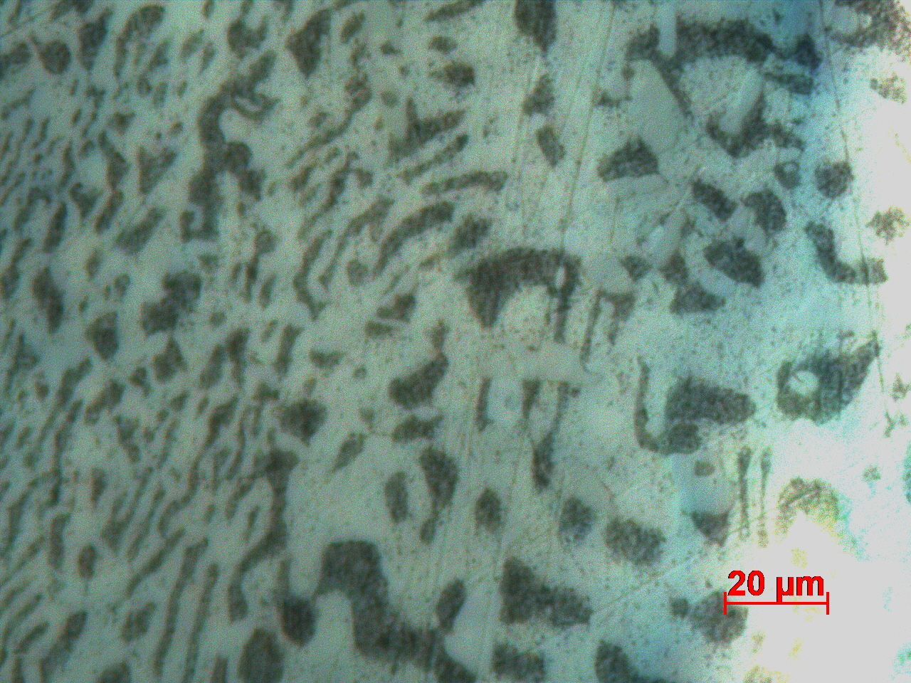 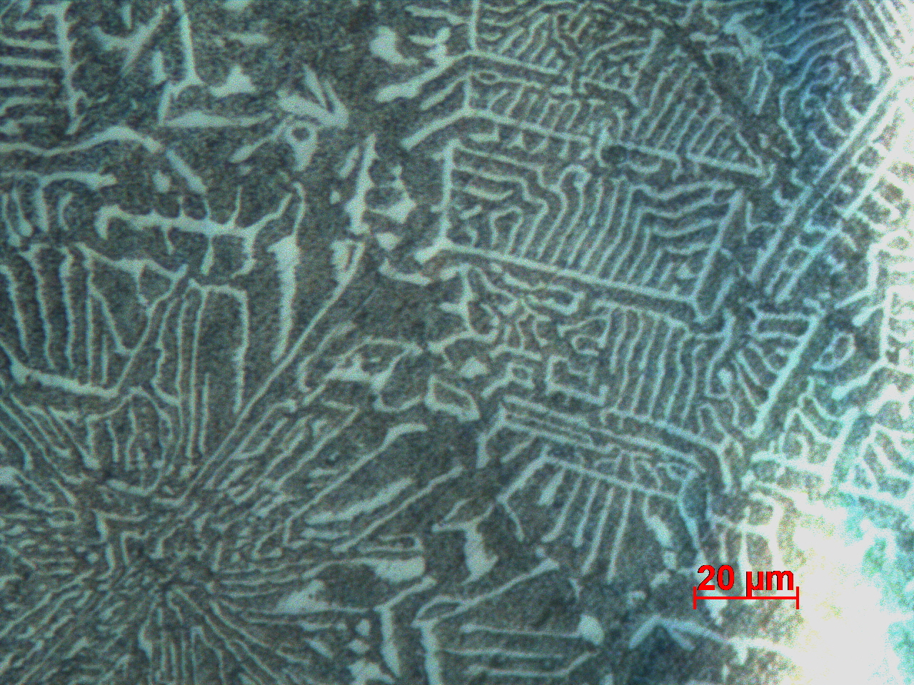 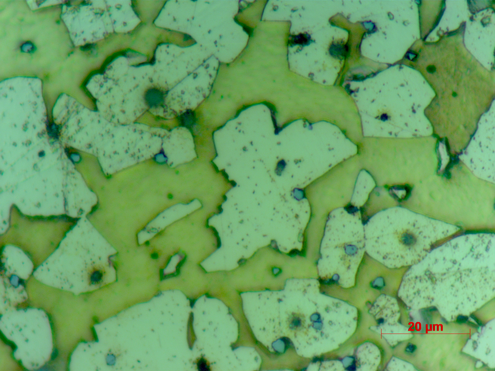 PbSn:X2(Bearing metal) PbSn:X3(lead base bearing metal) Brass
Brass specimen is etched using Acidified Ferric Chloride.
In the etched microstructure, Alpha phase appears as a light region (Zn precipitate) and Beta phase appears as the Dark region.
X2 (Bearing metal) :
X2 specimen is etched using 2% Nital. In the etched microstructure, White cuboids of Sb-Sn, white needles of Cu6Sn5 and dark Pb-Sn-Sb eutectic matrix can be observed.
X3 (Lead base bearing metal) :
X3 specimen is etched using 2% Nital. In the etched microstructure, (shown under observation) : white cuboids of Sb-Sn, Black & white matrix of ternary eutectic Pb-Sn-Sb and dark globules of lead can be observed.